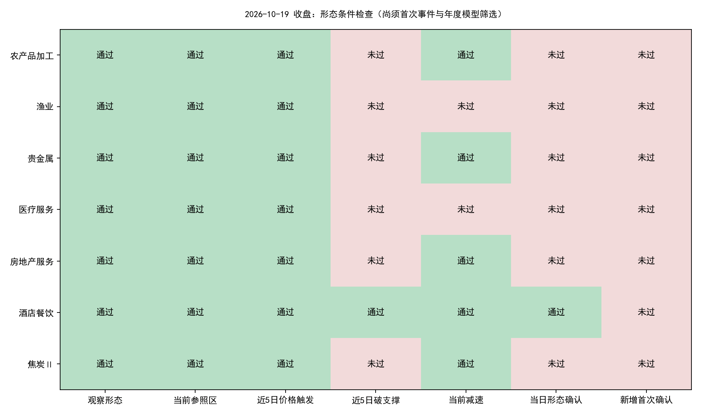
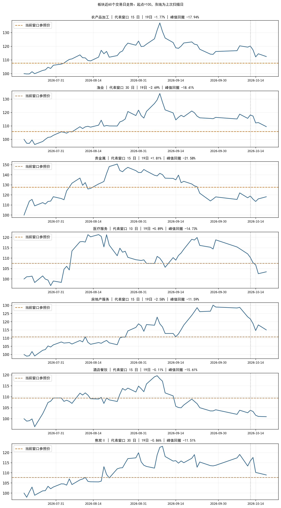

今日结果：103个有效申万二级自算板块中，7个观察、7个价格触发、1个当日形态确认；新增首次确认0个，年度板块模型通过0个，个股新入场候选0只。
本次补齐10月14、15、16、19日四个交易日，共22,259条有效日线，其中19日5,564条。扫描依据为19日完整收盘数据。
| 板块 | 窗口 | 19日涨跌 | 峰值回撤 | 价格触发 | 形态确认 | 减速比 | 尚缺条件 |
|---|---|---|---|---|---|---|---|
| 农产品加工 | 15 | -1.77% | -17.94% | 是 | 否 | 0.397 | 近5日破支撑 |
| 渔业 | 30 | -2.69% | -18.41% | 是 | 否 | 0.799 | 近5日破支撑、当前减速 |
| 贵金属 | 15 | +1.81% | -21.58% | 是 | 否 | 0.000 | 近5日破支撑 |
| 医疗服务 | 10 | +0.89% | -14.73% | 是 | 否 | 1.255 | 近5日破支撑、当前减速 |
| 房地产服务 | 15 | -2.58% | -11.59% | 是 | 否 | 0.557 | 近5日破支撑 |
| 酒店餐饮 | 15 | -0.11% | -15.61% | 是 | 是 | 0.438 | 旧事件再次确认，非新入场事件 |
| 焦炭Ⅱ | 30 | -0.86% | -11.51% | 是 | 否 | 0.272 | 近5日破支撑 |


观察、价格触发、形态确认、去重后的首次确认、年度模型通过是不同阶段。只有新的首次确认通过年度板块模型，才启动同日个股筛选。减速比为最近2日平均负收益／此前3日平均负收益，门槛沿用0.65；分母须大于0。
酒店餐饮19日重新满足形态确认，但仍是9月8日见峰、9月17日首次确认的同一轮事件。首次确认年度模型分数约-0.009877，低于0.003289阈值；既定策略不会因后续重复确认重新给旧事件开放入场。今天没有新的板块事件进入个股层，因此阻塞点不是个股筛选。
| 板块 | 源事件 | 本轮峰值日 | 首次确认日 | 首次确认年度分数 | 年度阈值 | 首次模型通过 |
|---|---|---|---|---|---|---|
| 酒店餐饮 | 801219.SI_s5_20260728 | 2026-09-08 | 2026-09-17 | -0.009877156466245651 | 0.0032892869785428047 | False |
与13日相比，观察板块由4个增至7个，价格触发由2个增至7个；医疗服务、房地产服务、焦炭Ⅱ进入当前观察池。不同日期的代表窗口可能变化，不能将不同窗口的参照价直接作连续比较。酒店餐饮是由“缺减速”变成“形态满足，但旧事件不可重复入场”。
10月14日至19日新增首次确认共0个，年度板块模型通过0个；按各确认日当时的成员及行情形成的历史候选共0条。
无。
策略的入场有效期是确认后的一个交易日；14日至16日的信号即使入选，也不能当成19日收盘后新出现的机会。19日确认的候选最早进入10月20日流程。交易日采用本地日历，并核对上交所2026年休市安排。
无。
今日未进入个股评分：没有通过年度板块模型的新首次确认。候选为0不表示将全市场个股逐只评分后全部淘汰。
| date | rows | nontrading_placeholders_removed | basic_coverage | turnover_coverage | adjustment_coverage |
|---|---|---|---|---|---|
| 20261014 | 5563 | 0 | 1.0 | 1.0 | 1.0 |
| 20261015 | 5565 | 0 | 1.0 | 1.0 | 1.0 |
| 20261016 | 5567 | 0 | 1.0 | 1.0 | 1.0 |
| 20261019 | 5564 | 0 | 1.0 | 1.0 | 1.0 |
摘要 · 期间首次确认 · 个股期间诊断 · 今日候选 · 与13日对比 · 哈希与时序核验
行情快照：datahub/releases/selection_live_20261019_eod。板块数据：alpha_lab/data/sector_live_datasets/sw_l2_v1_20261019T143622_793293Z。扫描产物：alpha_lab/outputs/sector_live_scan/20261019T144154_853953Z。
OPENBLAS_NUM_THREADS=1 OMP_NUM_THREADS=1 MKL_NUM_THREADS=1 python datahub/scripts/frozen_research.py run --release datahub/releases/selection_live_20261019_eod alpha_lab/outputs/strategy_2026_opportunity_scan/20261019_eod/evaluate_existing_models.py --scan alpha_lab/outputs/sector_live_scan/20261019T144154_853953Z